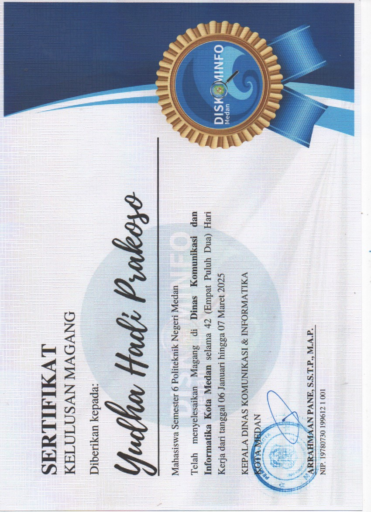
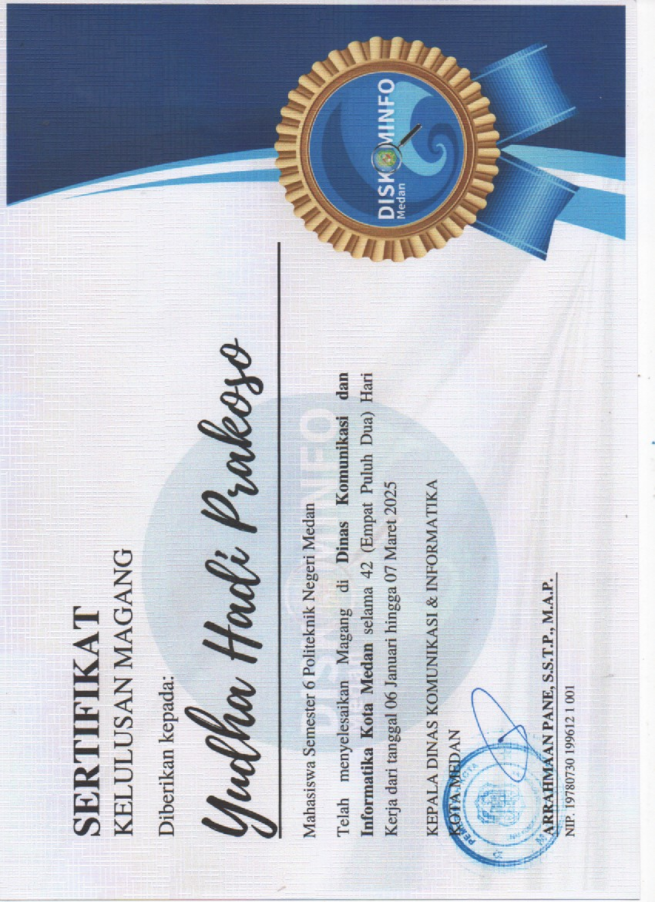

Hai, perkenalkan, nama saya Yudha Hadi Prakoso. Saya lahir pada tanggal 31 Januari 2005. Saya lulusan dari Politeknik Negeri Medan pada jurusan Teknik Komputer & Informatika program studi Teknik Komputer dengan IPK 3,41. Saya memiliki kemampuan dasar dalam beberapa bahasa pemrograman seperti C, C++, Python, HTML, CSS, JavaScript, dan PHP. Selain itu, saya juga memiliki pengetahuan dasar tentang IoT (Internet of Things) dan pengembangan web. Saya juga memiliki kemampuan dalam menggunakan beberapa software seperti Microsoft Word, Microsoft Excel, Microsoft PowerPoint, Figma, Canva, dan Arduino IDE. Saya dapat bekerja sama secara tim maupun mandiri. Saya mampu berkomunikasi dengan baik dan sopan. Saya juga memiliki semangat yang tinggi, pekerja keras, jujur, kreatif, dan bertanggung jawab terhadap hal yang saya kerjakan. Saya memiliki motivasi untuk terus maju dan mengembangkan keterampilan saya.

 
